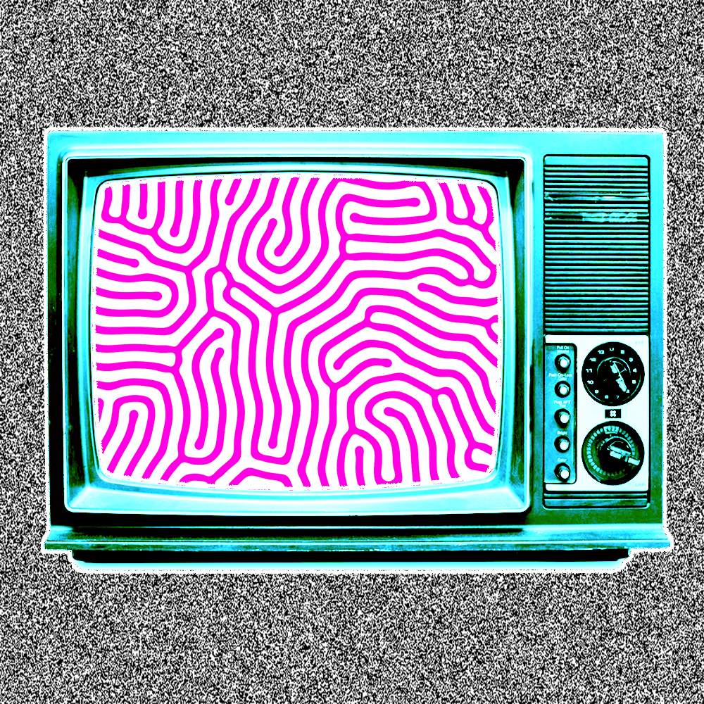

110 Center for Visual Arts
Phone: (309) 438-3921
Director: Aaron Paolucci
Degrees Offered: B.A., B.S.
The major in Arts Technology is a 55-hour interdisciplinary program in the College of Fine Arts that emphasizes theory, design, and practice in the application of computer technology to art, music, and theatre. The degree provides undergraduate training and experiences in arts technology to better prepare students with a broad range of knowledge and skills in multimedia design, including digital video and sound, computer graphics and theatre design, digital and MIDI music, and web design.